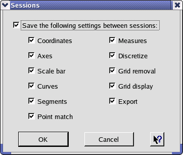

Engauge Digitizer - Sessions Dialog
Engauge Digitizer - Sessions Dialog
Engauge Digitizer - Sessions Dialog
Engauge Digitizer - Sessions DialogThe sessions dialog is used to select which settings are saved between sessions. The first checkbox enables or disables the saving of settings between sessions.
When the saving of settings is enabled, the checkboxes underneath determine which settings are saved. These checkboxes correspond to the entries in the Settings menu.
